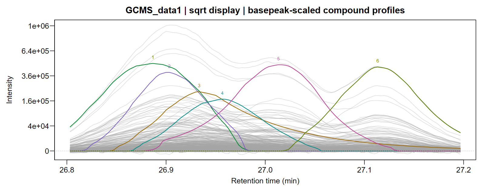
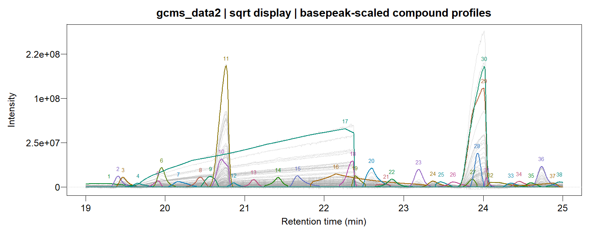

GCMSprime is part of a focused three-package toolkit: L0glm supplies fast sparse GLM selection, L0nmf supplies sparse factorization and PSF estimation, and GCMSprime turns those methods into a chromatographic workflow.
Installation
install.packages("remotes")
remotes::install_github("tomwenseleers/GCMSprime/GCMSprime")One chromatogram, complete output
library(GCMSprime)
fit <- GCMSdeco("sample.cdf", "sample.msp", xlsx_file="sample.xlsx",
alkanes_file="alkanes.cdf", precluster=32L)
fit
plot(fit, type="lines", file="sample_traces.pdf")
plot(fit, type="heatmap", file="sample_heatmaps.pdf")
plot(fit, type="profiles", file="sample_profiles_spectra.pdf")The workflow calibrates a time-varying PSF, models a smooth baseline, resolves overlapping compounds and refines their spectra on every original mass channel. Results are ordered by apex retention time. MSP files are readable by NIST MS Search; Excel reports contain integrated areas and compact spectra.
Experimental examples
The GC/MS tutorial includes two experimental chromatogram windows, complete fitted signals, spectra, timings and exports.


The underlying factorization and PSF methods are available independently in L0nmf.
Spectral libraries
Import MSP libraries into sparse memory or SQLite storage, preserving raw peaks, chemical identifiers, synonyms and retention-index provenance:
lib <- read_msp("library.msp", backend="sqlite", db_file="library.sqlite")
spectra(lib, which=1:1000, nominal=TRUE, normalize="l2")
library_metadata(lib, which=1:10)
retention_indices(lib, which=1:1000, phase="DB5")Library formats and storage covers OpenChrom MSP exports, MoNA/Golm MSP and GCMS-ID CSV predictions.
Citation and acknowledgements
An article describing these methods is in preparation. Please cite the package and the methodological sources linked in the help pages when using this work. OpenAI Codex/GPT-6 Astra and 6.1 Sol assisted code optimization, refactoring and documentation; the authors developed the key ideas and take responsibility for the work.